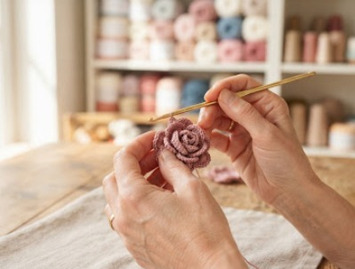

Stitched with love, crafted for comfort

At The Artloft, every piece begins with a single loop, a quiet moment, and a vision of bringing warmth into your everyday life. We believe that true luxury lies in the details—the intentional stitches, the touch of soft fibers, and the time poured into creating something uniquely yours. Born from a passion for handcrafted artistry, The Artloft is an elevated sanctuary for modern crochet. From cozy wearables to timeless home accents, our creations bridge the gap between traditional craft and contemporary design.
When you choose The Artloft, you aren’t just buying a product, you’re wrapping yourself in a story. We believe that every stitch tells a story and every piece is a work of art.